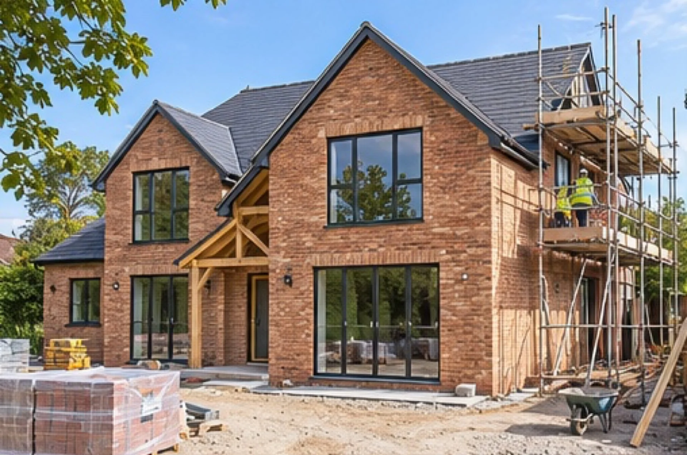
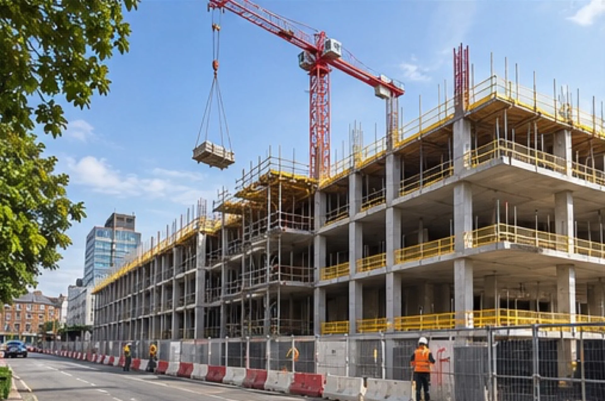
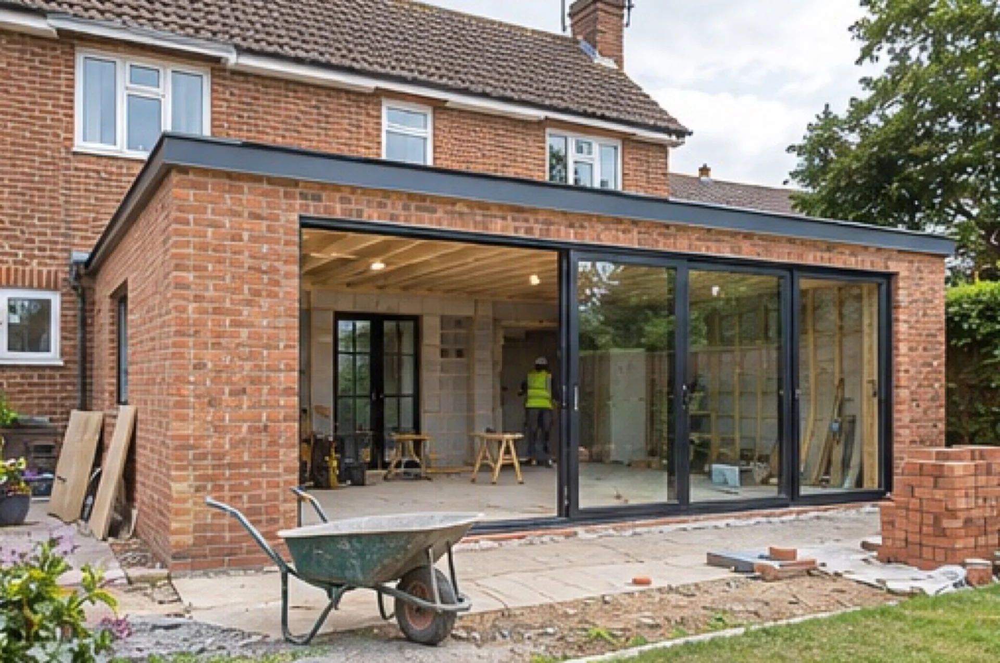
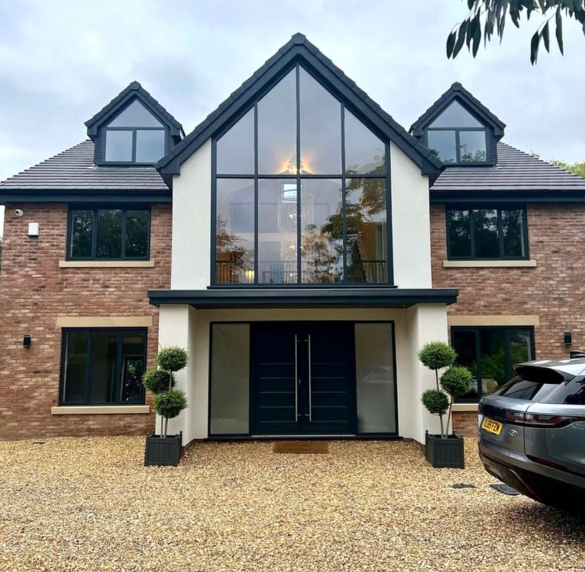
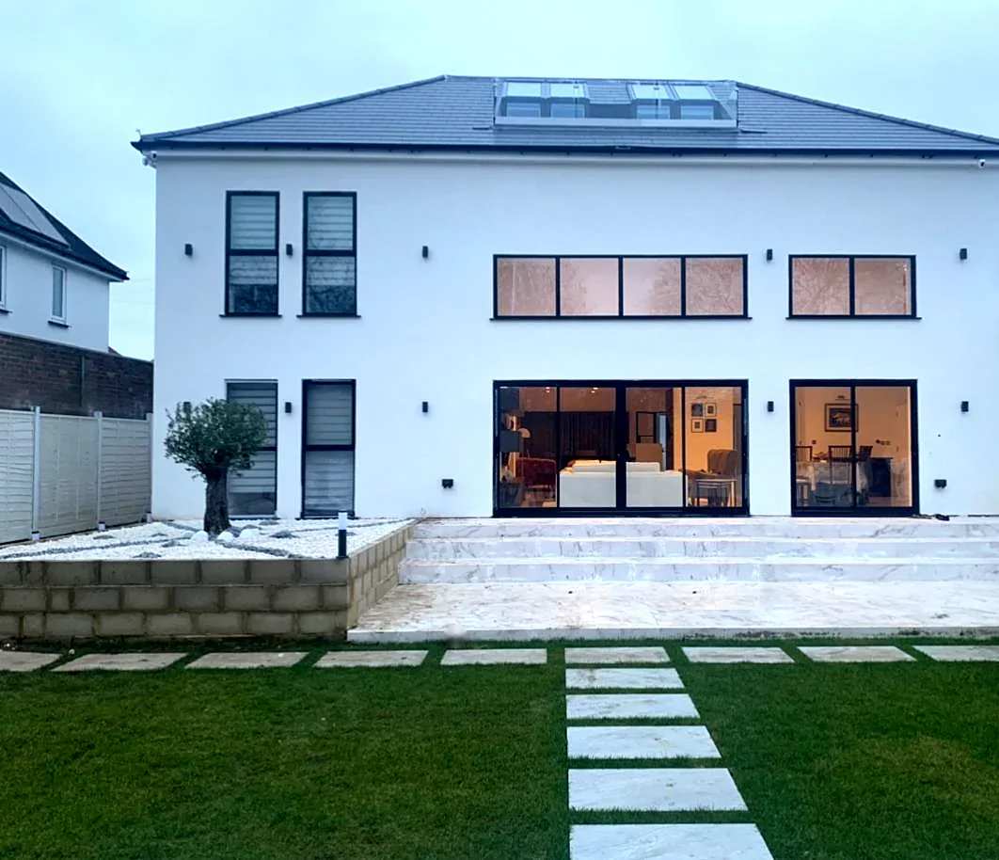
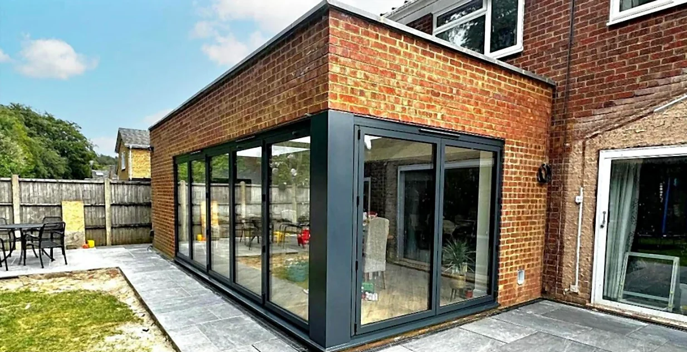
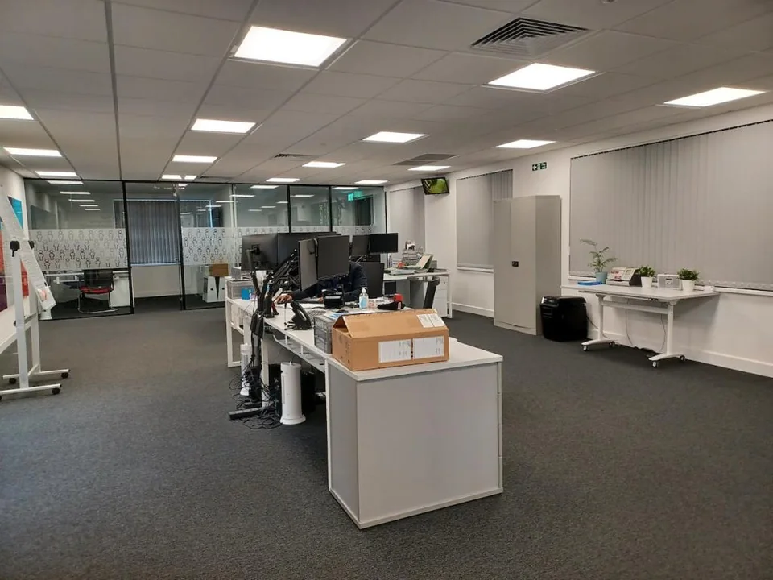
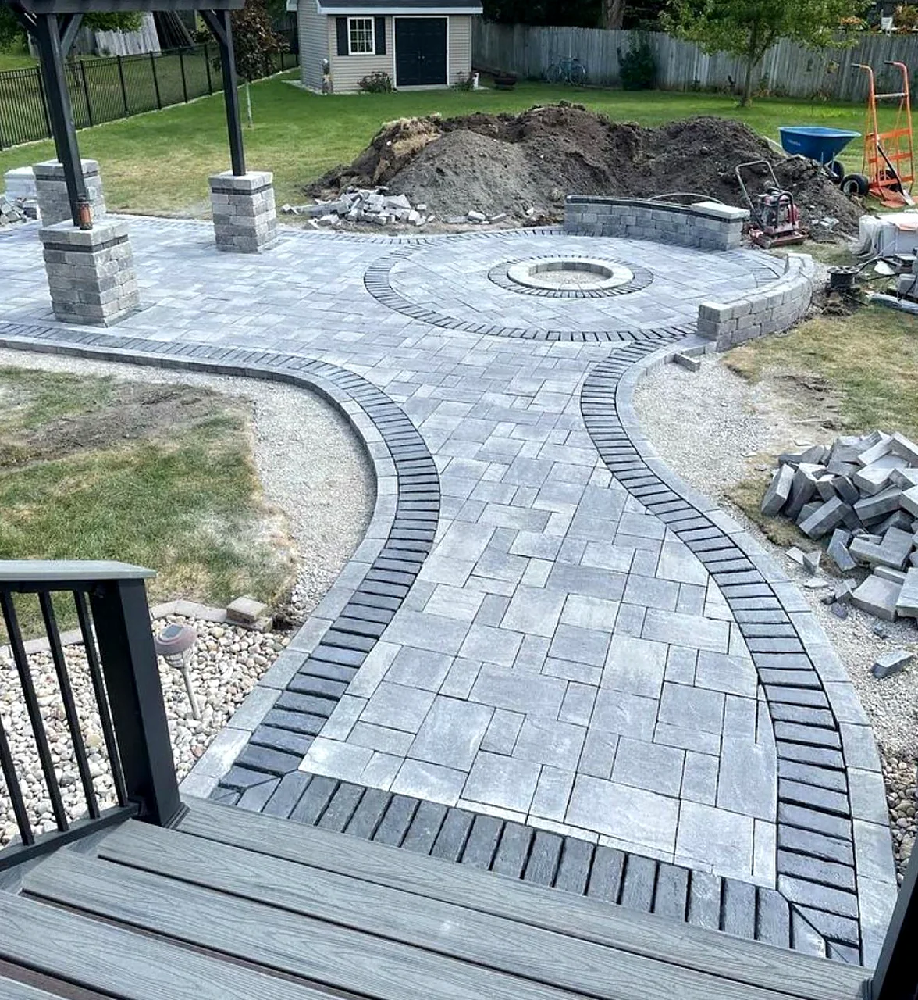
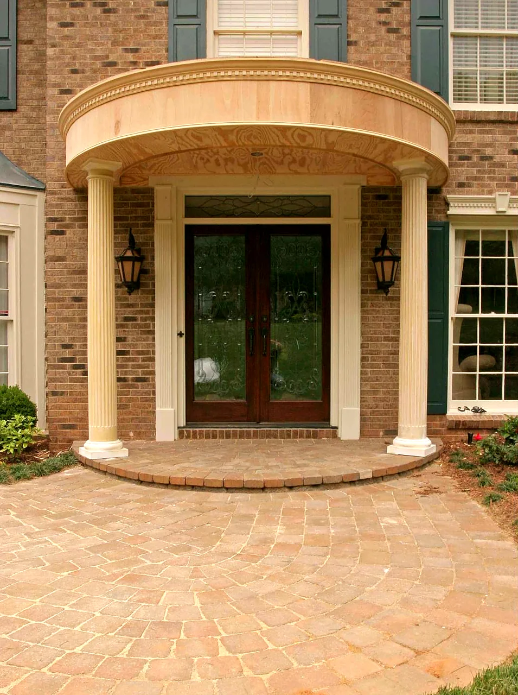

Windsor, Berkshire
From new homes
to major builds.
New builds, extensions and renovations for homeowners. Refurbishments and construction packages for businesses and main contractors.
Discuss your project


Plan a commercial or community project
For commercial clients
Bring Civic into your next tender.
We welcome enquiries from facilities teams, property managers and main contractors, whether you have a defined work package or need a site visit to shape the brief.
Invite us to tenderWhat to share with your enquiry
- Scope
- What needs doing and any drawings or specifications.
- Programme
- Tender deadline, target start and handover dates.
- Site
- Postcode, site access, working hours and whether the premises will stay occupied.
- Procurement
- Any onboarding documents, insurance requirements or tender instructions.
Selected work
Project gallery
Homes, staircases, interiors, driveways, places of worship and commercial work. Select a photo for the details.

New build
New-build house

Northwood · HA6
Large new home

Extension
Kitchen extension

Complex staircases
Suspended rod staircase

Oxford
Church renovation

Extension
Corner-glazed extension

Richmond, London
Driveway & paving

Decor upgrade
Panelled dining room

Northwood · HA6
Brick family home

Slough · SL2
Office refurbishment

Loft conversion
Loft shower room

Outdoors
Patio & fire pit
A Civic specialism
Places of worship
Civic has built, extended and renovated mosques, churches and other places of prayer, including a church renovation in Oxford, working with many different communities to help them establish a place to come together.
We understand that these projects are often funded by the community, built in phases and planned around prayer times and services. We can help from the early drawings and planning stage through to the finished building.
Places of worship
A Civic specialism
Complex staircases
Floating treads, suspended rod and cable balustrades, curved steps and integrated lighting. Civic specialises in the complicated staircase set-ups that most builders avoid, and builds the hidden structure that makes them look effortless.
Complex staircases

Design & build
A home shaped around you
For 20 years, Civic has helped clients build custom homes across South East England and West London. Our architects, builders and design-and-build coordinators bring the drawings, site work and finishing decisions together.

Start with the setting
How should the house sit on its plot? Where would you like daylight, privacy or a view into the garden? These conversations help us plan a home that suits the way you live.

Choose the finish together
Our aim is to balance environmental considerations, a sense of luxury and your budget. Tell us which materials, fittings and details matter most to you.

Keep the build coordinated
Our management team oversees domestic and commercial work, from loft conversions to new builds. Your coordinator keeps you informed as the work progresses.
Free property assessment
Talk through your project
Tell us what you want to change, what you hope to spend and when the space needs to be ready. Our team will discuss your priorities, answer your questions and talk through the next steps for a quote.
Request a free assessment ↗Freephone0800 274 0240